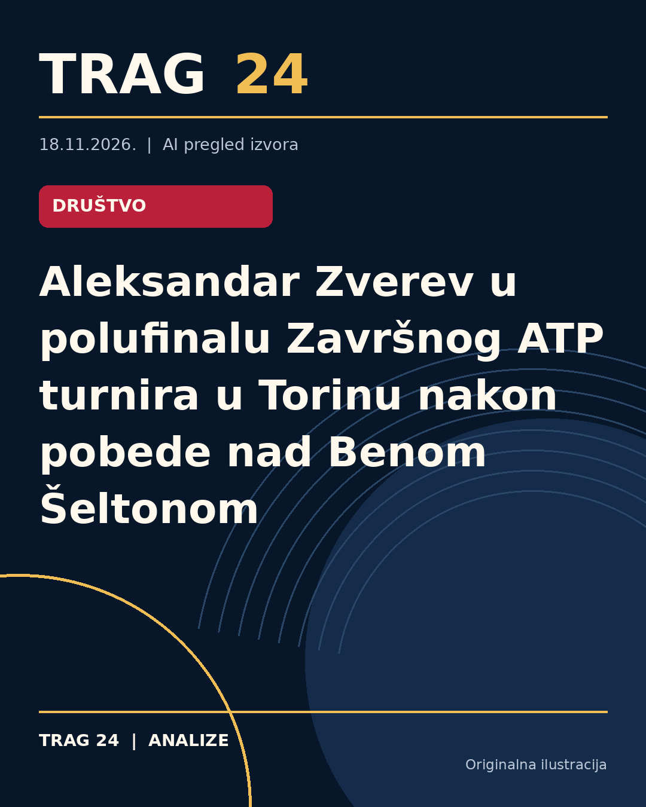

Aleksandar Zverev u polufinalu Završnog ATP turnira u Torinu nakon pobede nad Benom Šeltonom

ŠTA SE DOGODILO
Nemački teniser Aleksandar Zverev pobedio je Amerikanca Bena Šeltona u drugom kolu grupe 'Džon Mekinro' na Završnom ATP turniru u Torinu, rezultatom 6:2, 7:6 (7:4). Zverev je tako obezbedio plasman u polufinale turnira.
HRONOLOGIJA
Meč je trajao jedan sat i trideset šest minuta. Zverev je sjajno započeo susret prvim setom, u kome je napravio dva brejka i brzo stekao prednost od 5:1, što je potvrdio osvajanjem seta sa 6:2. Drugi set bio je mnogo neizvesniji i posle nekoliko propuštenih brejk lopti kod rezultata 4:4, meč je otišao u taj-brejk, u kome je Zverev savladao Šeltona sa 7:4. Ovim rezultatom Zverev ima dve pobede u grupi, dok Šelton ima po jednu pobedu i poraz.
ŠTA NAVODE IZVORI
Izvor Danas izvestava o Zverevljevom plasmanu u polufinale i o važnosti njegove pobede, kao i o Šeltonovim šansama u poslednjem kolu grupe protiv Rafaela Hodara. Izvor Novosti dodatno opisuje tok meča, ističući Zverevljev dobar start i borbu u drugom setu, kao i značaj narednih mečeva za sve učesnike grupe.
ŠTA JE POTVRĐENO
Potvrđeno je da je Zverev pobedio Šeltona rezultatom 6:2, 7:6 i da je plasiran u polufinale Završnog ATP turnira. Takođe je potvrđeno da će Šelton i Zverev odigrati naredne mečeve u grupi, odnosno Šelton protiv Hodara, a Zverev protiv Artura Fisa, dok Zverev trenutno vodi u grupi sa dve pobede.
ŠTA NIJE POTVRĐENO
Ni jedan od izvora ne navodi tačan datum meča niti detalje o mestu odigravanja van opšteg naziva Torin. Nije potvrđeno koliko utakmica ukupno čini grupnu fazu ni konačni raspored polufinalista osim Zvereva. Niti je potvrđeno da li je bilo povreda tokom meča ili drugih nesportski detalja.
ŠTA OSTАJE OTVORENO: Ostaju neizvesni definitivni sastavi polufinala jer su ostale još utakmice grupe. Takođe, nema detaljnih podataka o daljoj borbi Šeltona i drugih tenisera u grupi, kao ni eventualnim taktičkim ili zdravstvenim faktorima koji bi mogli uticati na naredne mečeve.
Izvori
- https://www.danas.rs/sport/zverev-selton-zavrsni-masters-u-torinu/
- https://www.novosti.rs/sport/tenis/1672244/aleksander-zverev-ben-selton-atp-torino-zavrsni-masters-pobeda-izvestaj-rezultat-najnovije-vesti
Ova analiza je pripremljena uz pomoć veštačke inteligencije na osnovu javno dostupnih izvora. Navodi izvora nisu nužno nezavisno potvrđeni.